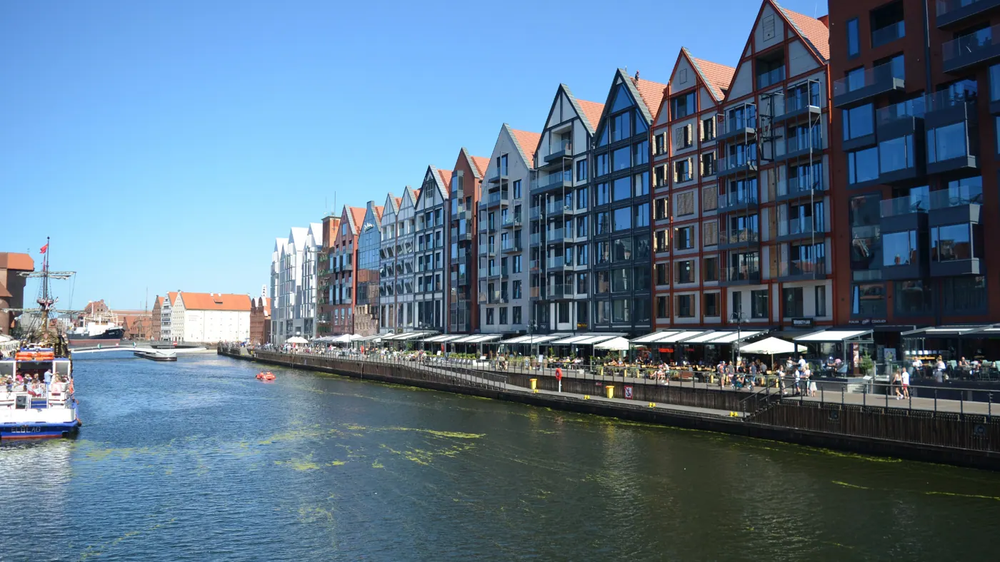
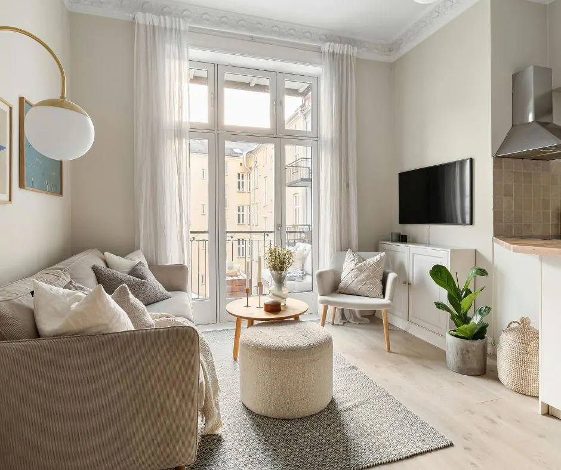
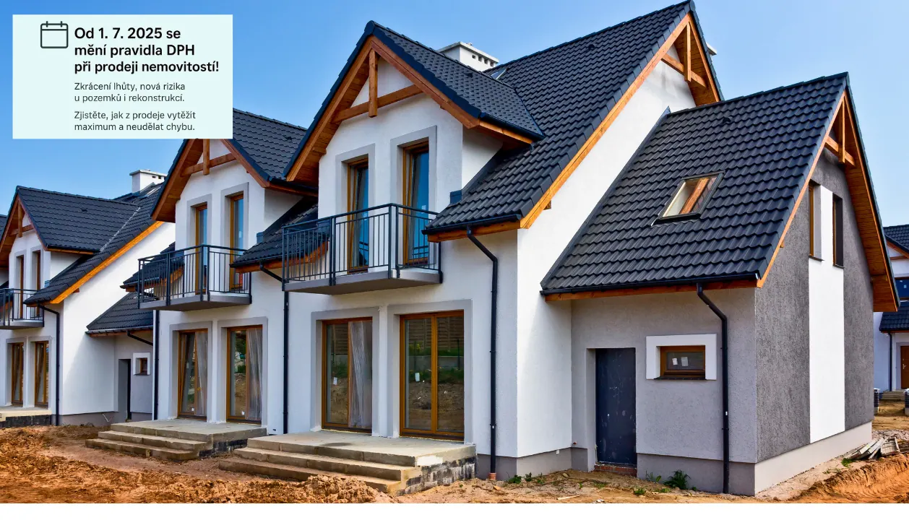
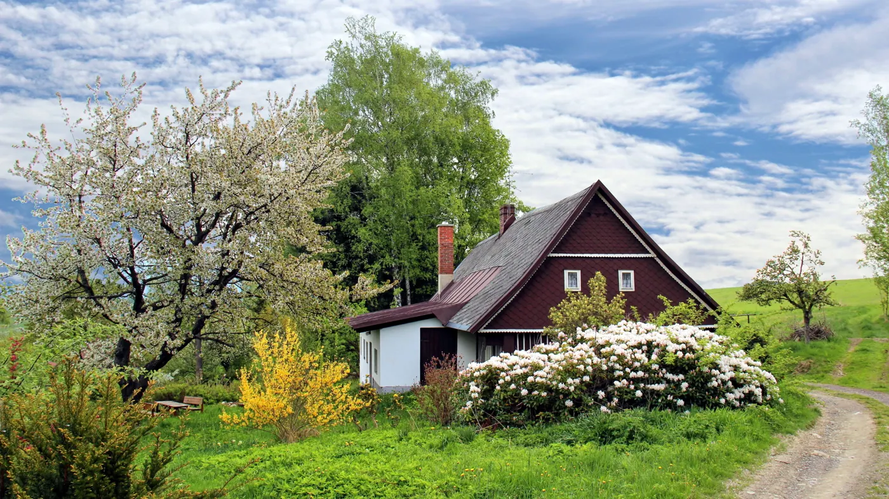
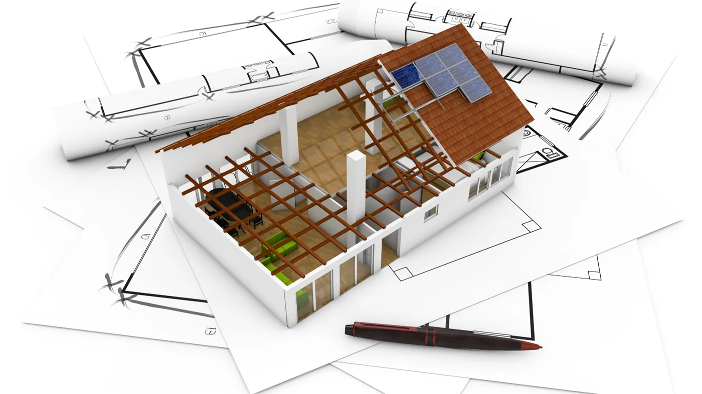
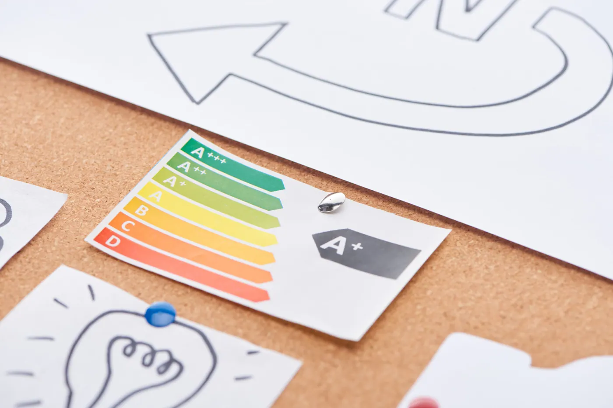
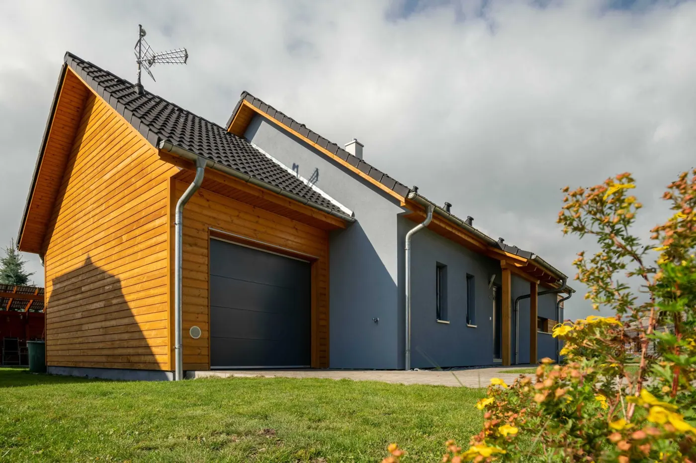

Blog
Novinky ze světa realit
Daně, nájmy, legislativa i zamyšlení z praxe. Píšu srozumitelně — tak, jak bych to vysvětloval u vás v kuchyni.

Daň z prodeje nemovitosti v roce 2026
Prodej bytu, domu nebo pozemku obvykle znamená velké rozhodnutí a nemalé peníze. Právě proto mě klienti často oslovují s otázkou: „Budu muset z prodeje nemovitosti platit daň?“ Odpověď není vždy stejná. Záleží na tom, jak dlouho nemovitost vlastníte, zda jste v ní skutečně bydleli, jakým způsobem jste ji získali a co plánujete udělat s penězi z prodeje. Dobrou zprávou je, že v řadě situací lze nemovitost prodat zcela bez daně. Je však důležité znát pravidla a nepřehlédnout povinnosti vůči finančnímu úřadu. Pojďme si vše vysvětlit jednoduše, přehledně a na praktických příkladech.
Číst článek
Největší riziko pronájmu nevzniká v bytě. Vzniká mezi lidmi.
Když se řekne problém s pronájmem bytu, většina majitelů si představí hlavně poškozený byt, nezaplacený nájem, rozbitou kuchyňskou linku nebo nájemníka, který se nechce vystěhovat. Ano, i to se může stát. Ale z mé zkušen

Mají větrné elektrárny vliv na cenu nemovitostí? Zamyšlení nad daty, studiemi a realitní praxí
Když se v obci začne mluvit o větrných elektrárnách, rychle se objeví i otázka, která zajímá majitele domů, bytů i pozemků: klesne kvůli nim hodnota nemovitosti? Na první pohled se může zdát, že odpověď bude jednoduchá.

Zvýšení nájmu krok za krokem: Co může pronajímatel a co už ne
Zvýšení nájmu má jasná pravidla. Kdy a o kolik může pronajímatel nájem navýšit, aby vše bylo podle zákona a bez zbytečných sporů? Přehledně krok za krokem.
Stavební dokumentace: Nová povinnost pro majitele domů a bytů. Máte ji v pořádku?
Myslíte si, že stavební dokumentace je jen papírování navíc? Od roku 2024 ji musí mít v pořádku každý majitel nemovitosti. Ukážu vám, proč je důležitá, co všechno kontrolovat a jak postupovat, pokud chybí.

Srovnání cen novostaveb: Hradec Králové vs. Gdaňsk
Kde se dnes vyplatí kupovat nové byty? V době, kdy se český rezidenční trh stabilizuje a Češi hledají nejen investiční příležitosti, ale i nová místa pro rekreaci nebo trvalé bydlení, roste zájem o porovnání vývoje cen m

Jak je to s platbou televizních a rozhlasových poplatků v nájemním bytě?
Když si pronajímáte byt, nejde jen o nájem a energie. Mnoho lidí se ptá: musím platit i televizní a rozhlasové poplatky, když jsem nájemník? Odpověď není složitá, ale záleží na několika okolnostech. V tomto článku si to

Nová pravidla DPH při prodeji nemovitostí od 1. 7. 2025
Na co si dát pozor a jak se vyhnout zbytečným chybám Od 1. července 2025 vstupují v platnost důležité změny zákona o DPH, které ovlivní každého, kdo plánuje prodej domu, bytu nebo pozemku. Dobrou zprávou je, že pravidla
Virtuální prohlídka nemovitostí – matterport
Ve světě, kde se technologie neustále vyvíjejí, se i realitní trh musí přizpůsobovat novým trendům. Jedním z nejvýznamnějších pokroků poslední doby je virtuální prohlídka nemovitostí pomocí technologie Matterport. Předst

Jak získat dotaci z programu „Oprav dům po babičce“: Průvodce podáním žádosti
Od července 2023 mají lidé možnost získat v rámci programu „Oprav dům po babičce“ dotaci přes milion korun na rekonstrukci či stavbu domu. Od března 2024 je zároveň možné zažádat o zvýhodněný úvěr k této dotaci. V tomto

Legalizace stavby: Jak na to krok za krokem
Legalizace stavby je proces, který může na první pohled vypadat složitě a plný administrativních úskalí. Mnoho majitelů nemovitostí v České republice se s tímto problémem setkává, ať už kvůli neoznámené stavbě z minulost
Odhad nemovitosti: Klíč k úspěšnému prodeji a investici
Představte si, že máte v ruce klíč k pokladu, který čeká na objevení. Takovým pokladem může být vaše nemovitost, jejíž správné ocenění je uměním, které může přinést nečekané zisky. Stanovení adekvátní ceny nemovitosti ne
Jak proměnit pronájem v radostnou zkušenost, která přináší víc než jen finanční zisky
Představte si svět, kde pronájem nemovitostí není jen o podepisování smluv a inkasování nájmu, ale o skutečné radosti z dobře vykonané práce. Ano, i takové věci se mohou stát! A právě o tom je koncept „Nájem s radostí“.

Co lednička ví už dávno, dům se teprve učí
Energetické štítky a průkazy energetické náročnosti budov (PENB) se staly nedílnou součástí realitního světa. Ačkoliv se mohou na první pohled zdát jako byrokratická zátěž, jejich význam v dnešní ekologicky uvědomělé spo

Garáž nebo garážové stání?
Máte vybraný ten správný dům, ten dům, který splňuje vaše sny. Ale co váš čtyřkolový nebo dvoukolový miláček? Mám tedy na mysli auto nebo motorku? Máte samozřejmě možnost zaparkovat před domem nebo na zahradě … hm, ale t
Odhad ceny zdarma
Kolik má váš domov hodnotu?
Nezávazně a zdarma. Přijedu, poslechnu si, co od prodeje čekáte, a řeknu vám reálnou cenu — ne číslo z kalkulačky.